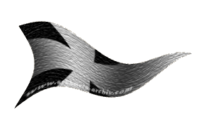
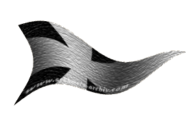

| Übersicht,
Anschläge und Stammtisch (RPG) |
|
Sambalia lädt
|
Agathe Wolfskopf
  |
*kneift die Augen zusammen und bückt sich, um mit dem Gesicht möglichst nahe heran zu kommen*
Sie haben komische Ohren, fast wie Elfen...
*kneift sie noch fester zusammen*
... aber sie sind kleiner und grüner...
*kratzt sich nachdenklich am Kopf*
Das muss ich mir Mal genauer ansehen...
Agathe Wolfskopf
Zur 1. Stunde am 38.Erntemond im Jahre 452 |
18.10.12 21:15
 |
|
| Chrynesia (RIP) |
Wir können nun berichten, dass jeder Zehnte in Sambalia koboldischer Herkunft ist. Insgesamt leben nut über 700 Kobolde hier.
Die weichenden Menschen werden weiterhin liebevoll in Nin Andune aufgenommen.
Lady Chrynesia,
Vorsteherin von Sambalia
Zur 21. Stunde am 39.Erntemond im Jahre 452 |
19.10.12 7:36
|
|
| Frodor Schneehorst (RIP) |
700 Kobolde ? nicht gerade viel
* murmelt der Halbling*
stolz auf seine Stadt schaut
Vormann Frodor Schneehorst,
Vorsteher von Waldebene
Zur 22. Stunde am 40.Erntemond im Jahre 452 |
19.10.12 13:28
|
|
| Chrynesia (RIP) |
Vormann Frodor,
glückwunsch dass Ihr mehr Kobolde beherbergen könnt.
Sambalia ist nunmal eine Kleinststadt und hier wimmelt es von Menschen und Elfen. Die müssen erst noch umgesiedelt werden.
Lady Chrynesia,
Vorsteherin von Sambalia
Zur 24. Stunde am 41.Erntemond im Jahre 452 |
19.10.12 19:29
|
|
Agathe Wolfskopf
|
Wieso weichen die Menschen denn vor den Kobolden zurück? Klingt, als würden sie vor ihnen flüchten...?
Agathe Wolfskopf
Zur 2. Stunde am 45.Erntemond im Jahre 452 |
20.10.12 12:38
|
|
Tattergreis
   |
Werte Chrynesia, auch wenn die Bevölkerung von Nin noch im Aufbau begriffen, erst in wenigen Tagen zur Wahl schreiten wird, hörte ich doch schon erste Stimmen der Sorge und auch der Unzufriedenheit in den Gassen.
Sorgenvolle Worte sind zu vernehmen. "Eine Stadt der Kobolde? Gleich hinter dem Fluss im Nordosten? Ist es denn wahr? Alles wird vertrieben was nicht Kobold ist? Eine Karawane der Armut! Alles flieht!..."
Dies und noch mehr kam mir zu Ohren. So bitte ich Euch, werte Chrynesia, die von Euch Vertriebenen zumindest mit dem Notwendigsten zu versorgen und sie für einen Neubeginn gut auszustatten. Denn viele der edlen Elfen und fleissigen Menschen, die nun nach Nin strömen, wirken recht heruntergekommen und machen einen erbärmlichen Eindruck.
Tattergreis,
Anführer der glorreichen Nation "Luna Park S.A.L"
Zur 7. Stunde am 45.Erntemond im Jahre 452 |
20.10.12 13:59
|
|
Übersicht,
Anschläge und Stammtisch (RPG)
|